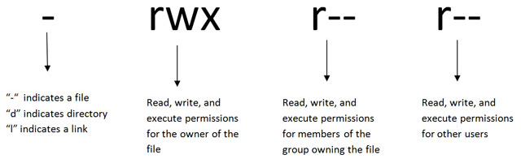

d - directory
- - File
l - symbolic link

421 = 7 - rwx
400 = 4 - r-- ==> octal value ==> read=4,write=2,execute=1
Default permission is defined on umask
#chmod u(or)g(or)o
#chmod u-wr test <== this will remove wr permission from test file
#chmod 700 test ==> oc
#mkdir bank
#cd bank
#mkdir account
#cd ../
#groupadd bank
#chown user:group file_director_name
#chown :bank bank ==> bank directory group permission change
#chmod o-rw bank ==> removed other permission
#chmod -R g+w bank ==> recursively
#chown -R :bank bank ==> recursively
Disable execute permission recursively except the directory.X will set execute permssion to the directory not file.
#chmod ug-x bank
#chmod ug+X bank
Change ownership to all (u,g,o)
#chmod a+r bank ==> all
Setuid :-
When a command or script with SUID bit set is run, its effective UID becomes that of the owner of the file, rather than of the user who is running it.
#ls -l /etc/passwd
#chmod u+s test
#chmod 4500 test ==> 4 represent as setuid
Setgid :-
when the script or command with SGID on is run, it runs as if it were a member of the same group in which the file is a member.
#chmod g+s test
#chmod 2500 test
Stickybit :-
Prevent the other user from deleting the file and directory.
/var/tmp and /tmp
#chmod +t test
#chmod 1777 test